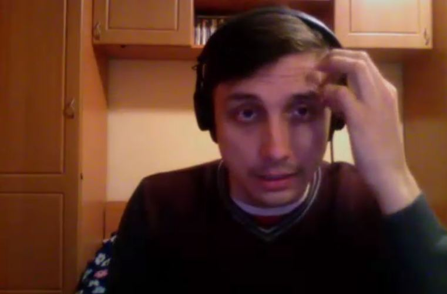

Timur Khusnutdinov: A Jewish Album
Timur Khusnutdinov on a revelation about Israel, on the word the Most High put into him, on his attitude to Jewish music and how it changed after God's touch.
24 February 2014. Interview by Ephraim Kalish.
I am continuing a series of interviews with people who interest me. They are all different, both in their creative fields and in their way of thinking. Sometimes great distances separate them. But what truly unites them is a thirst for creativity and for knowing God.
These conversations, recorded over Skype, are friendly talks. It matters to us to exchange views and to encourage and strengthen each other when there is need.
Today I am talking with the rock musician Timur Khusnutdinov, from Izhevsk, Russia.
Revelation
Ephraim: I'd like to ask you this: you recently recorded a Jewish album. Could you tell us what kind of album it is? As I understand it, you prefer the rock style? You're a rocker? Or what is the right word?
Timur: That's right, I'm a rocker to the bone.

Ephraim: This Jewish album I heard is not quite your style? How did you come to it? What prompted you to record it?
Timur: The Most High began to open my eyes to what the Bible says about Israel. It happened in a very interesting way. It may seem as if I'm trying to make myself out to be super-spiritual. But I'll tell you how it was.
I remember one day I took my guitar, as I usually do, and went to play before the Lord. I just took the guitar and went off alone into the secret prayer room. As always, I walked about and sang. And suddenly these words were born inside me. I had never thought about it, never thought about Israel. Never. Israel, my attitude to it was: well, Jews are Jews. We also have Armenians here, Tatars, Bashkirs. And suddenly I heard these words in my heart. Imagine, it wasn't physical, but it was inside me. The words were: "If Udmurtia (Udmurtia is the republic where I live) blesses Israel, I will bless Udmurtia." And that was all! Just like that!
I stood there in shock. And I didn't understand… I understood that the republic I live in really needs a blessing. But how can Udmurtia bless Israel? Everything in my head turned upside down. After that I began to think, to reflect, I began digging into the Scriptures.
And one day I went onto a Messianic website and read the shocking news that near Hevron in Israel terrorists had shot up a car: a husband and wife. And they left six children.
Ephraim: Yes, yes, I remember that case.
Timur: And I was simply pressed into my chair. And I understood that something like a voice was sounding inside me: "Start collecting money for them."
In the end I began collecting money from businessmen: I met people, talked with them, and they gave to this family.
I'm telling all this briefly. In fact it all took place over several years.
Working on the album
Now, how I came to this album: once we went to Israel with a group of people (I went as a musician). And I had to learn thirty songs in a month and a half.
As a musician, I had never liked Jewish songs. I didn't like them because of their simplicity and, let's say, their chanson-like harmony.
Ephraim: You're putting it kindly? What you really wanted to say is primitive harmony?
Timur: True! I never liked that kind of music.
I began learning. I sat down every day, took the computer, downloaded the lyrics, opened the songs on YouTube and began playing them. And the more I sang them, saying the words in Hebrew and in Russian, the more I entered into the material.
And you know, something began to happen to me. I simply fell in love with these songs and realised that I wanted to record such an album.
But when you listen to it, you'll see that you can't call it entirely Jewish. Let's say I passed the Jewish songs through the prism of my own soul.
Ephraim: It seems to me that for an artist that is the goal. I listened to what you did. And what I liked most there was precisely your reading, the part where you seem to be reflecting on everything you have touched. That was the most valuable thing for me.
At the end of the video there is a fragment of "Hatikvah" in Timur Khusnutdinov's version.
See also another conversation with Timur.
Interview by Ephraim Kalish / Torah-Art